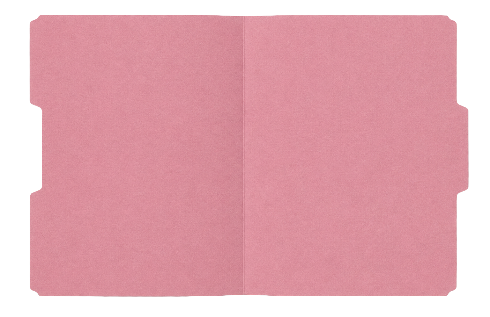
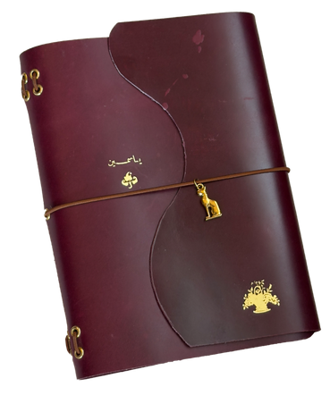
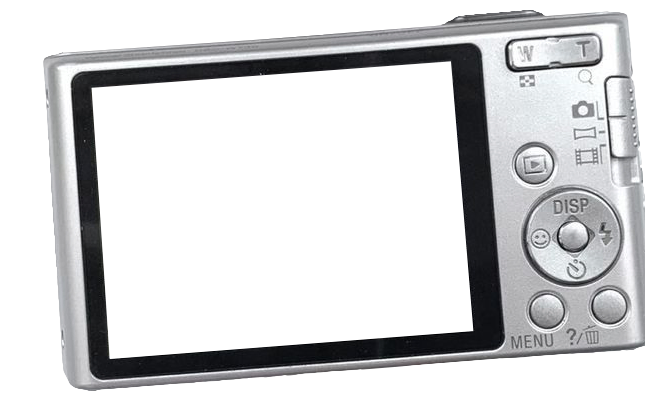
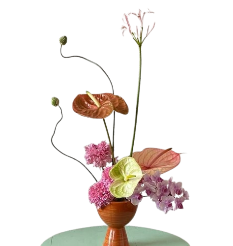
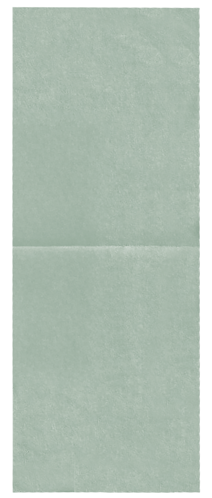
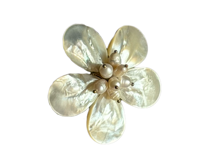
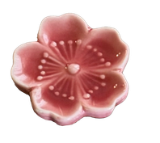
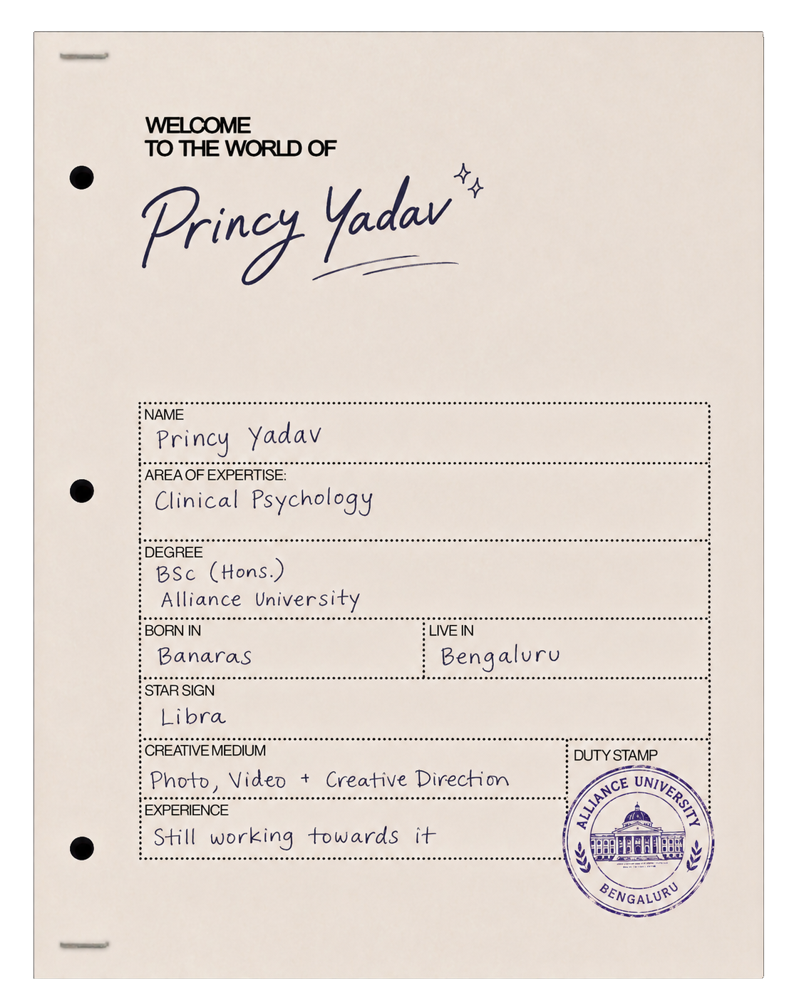
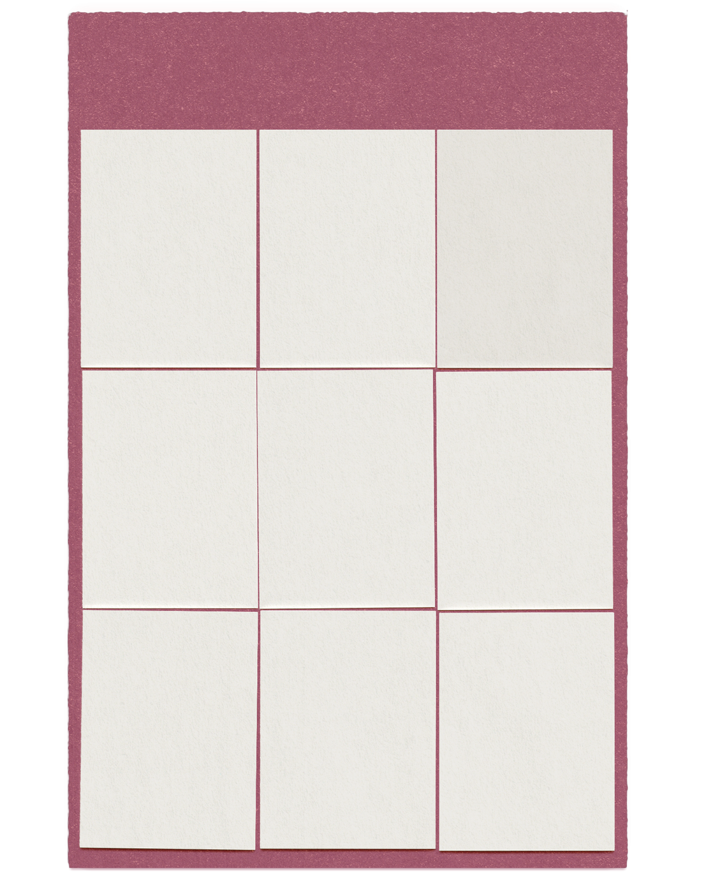

A creative journey in progress
A little about me
Curiosity, creativity
and the human mind.
I’m Princy Yadav, a clinical psychology student with a love for photo, video, and creative direction. This is my little corner of the internet to collect the things I make and the ideas that inspire me.
A growing collection
Selected work

Until next time